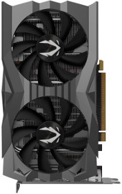

The GTX 1660 Super has a launch price of just $230 USD with
comparable performance to the $280 USD 1660 Ti. The 1660 Super has
14 Gbps GDDR6 (versus 12Gbps GDDR6 for the 1660 Ti and 8Gbps
GDDR5 for the 1660). The 1660 range of cards sits in the sweet spot for
many gamers because they offer superb 1080p EFps in popular titles
and they are relatively hassle-free in terms of noise, compatibility, and
stability. The 1660S also features Turing NVENC which is far more
efficient than CPU encoding and alleviates the need for casual
streamers to use a dedicated stream PC. Shop prices will determine
which 1660 series card represents the best value over time but at
today's prices, the 1660 Super effectively undercuts the 1660 Ti by $50
USD thus challenging the RX 590 in terms of overall value at 1080p. The
next step up from the 1660S would be to the $325 RTX 2060.